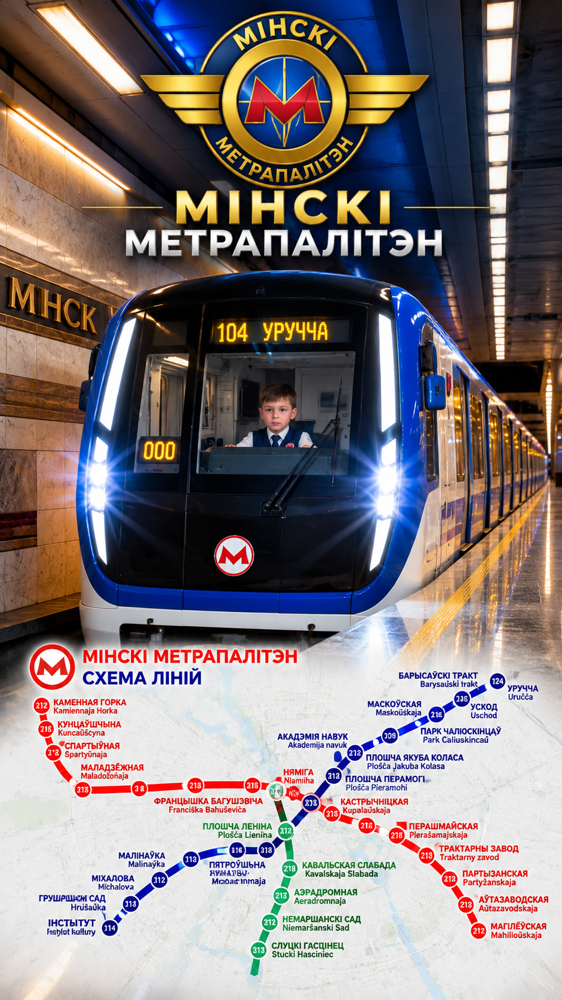

МЕТРО
0
км/ч
МАШИНИСТ КУЗНЕЦОВ ЗАХАР
Плошча Перамогі · 850 м
Рычаг вверх — тяга, вниз — тормоз
Пассажиры: 0
Ошибки машиниста:
0
Обзор: проведи пальцем по экрану 👆
КОНТРОЛЛЕР МАШИНИСТА
▲ ТЯГА
● 0
▼ ТОРМОЗ
НЕЙТРАЛЬ · 0%

НАЧАТЬ РЕЙС ▶